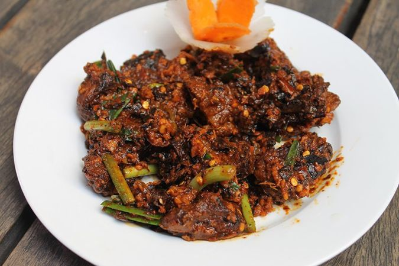

Home
Nepali Choila

A popular Nepali Cuisine.
Nepali Choila has always been a important part of Nepal's culture. Nepal is a country with many festivals and in many of those festivals Nepali choila has often been an integral part of those celebrations.
It is especially the case for the newars of Nepal who are the 8th largest ethnic/caste group in Nepal.
The recipe is not very complex.
Steps to cook Nepali buff Choila.
Ingredients.
- Meat: 500g boneless buffalo meat,cut into bite-sized cubes.
- Spices: 1tsp turmeric powder, 1 tsp red chili powder (adjust for heat), 1 tsp ground cumin, and 1 tsp ground coriander.
- Aromatics: 1 tbsp each of ginger and garlic paste, plus 2 tbsp finely chopped spring garlic or garlic cloves.
- Flavor Enhancers: 1 tsp ground timur (Sichuan pepper) for a distinct numbing citrus flavor, salt to taste, and juice of 1 lime.
- Tempering: 4-6 tbsp mustard oil and 1 tsp fenugreek seeds.
- Vegetables: 2-3 roasted and mashed tomatoes, 1 small sliced red onion, and fresh coriander for garnish.
Preparation Steps.
- Cook the Meat: Traditionally, the meat is char-grilled over an open fire (Haku Choila). For home cooking, you can boil the eat in a pressure cooker with turmeric and salt until tender (7-8 whistles), then sear it in a pan until slightly charred.
- Prepare the Base: In a large mixing bowl, combine the cooked meat with ginger-garlic paste, chill powder, cumin powder, coriander powder, timur, salt, and mashed roasted tomatoes.
- Add Fresh Aromatics: Mix in the sliced red onions, chopped spring garlic, and fresh coriander.
- The Tempering (Jhanne): Heat mustard oil in a small pan until it smokes. Add fenugreek seeds and let them turn dark brown/black. Pour this hot oil immediately over the spiced meat mixture.
- Final Touch: Add lime juice and mix everything thoroughly by hand (using gloves if sensitive to chilli) to ensure the spices are well-absorbed. Let it rest for at least 30 minutes before serving for the best flavor.